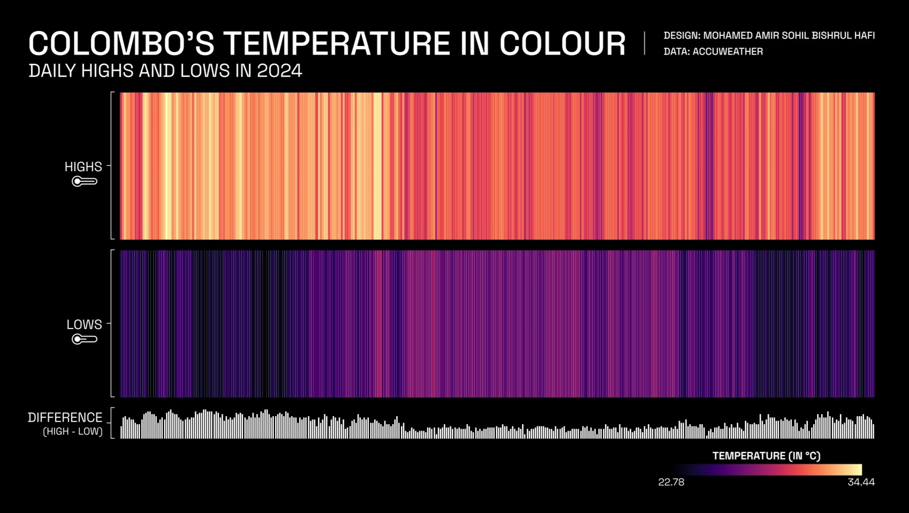

Colombo's Temperature In Colour
A full year of Colombo's climate, read in seconds instead of axis by axis.

The Problem
A full year of daily high/low temperature data usually gets reduced to a single number (an annual average, a record high, etc.) that loses the actual day-to-day texture of a place's climate. This project was built to render an entire year of Colombo's daily temperatures as one continuous, scannable image instead of a line chart or summary statistic.
The Approach
Daily highs and lows for 2024 are each rendered as their own horizontal band of colour-coded stripes, with one stripe per day, both mapped to a single shared colour scale. A third band beneath tracks each day's diurnal range (high minus low). Stacking all three bands together turns a full year of data into something readable in seconds.
Colombo is a deliberately meaningful choice of city for this format. The near-equatorial location without a strong seasonal temperature cycle is exactly the kind of place where a conventional line chart, built to show peaks and troughs across a year, undersells the story, because there often isn't a dramatic seasonal peak or trough to show.
The Outcome
No stripe in the Highs band ever reads cool, and no stripe in the Lows band ever reads hot. Colombo's daily temperature stays inside a comparatively narrow year-round band, without the seasonal winter/summer swing the same colour scale would show for a temperate-climate city. The difference band adds a layer the two temperature bands alone can't: the day-to-night swing itself visibly widens and narrows in its own rhythm across the year.
No stripe in the Highs band ever reads cool, and no stripe in the Lows band ever reads hot.